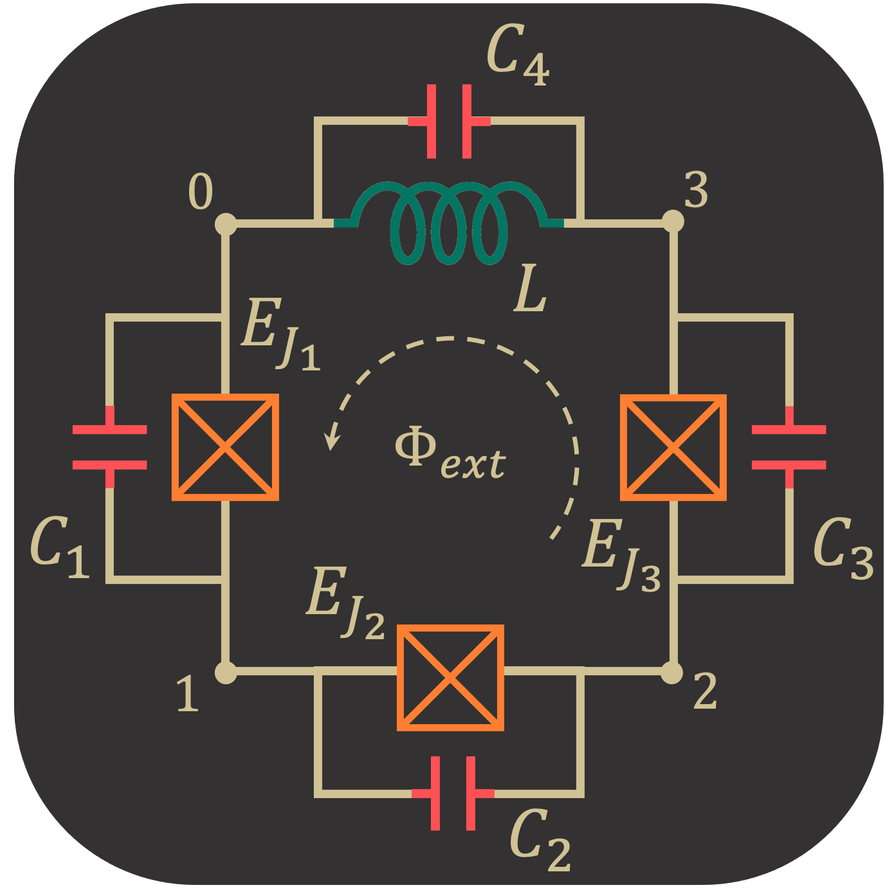

Flux Qubit (3JJ + L)
Introduction
Calculating the flux-tuning eigenvalues for a three-junction flux qubit incorporating nonzero linear loop inductance. The goal is to compare SQcircuit’s solution to a case-specific solution following the two papers mentioned below.
Reference for circuit model and parameters: https://journals.aps.org/prb/abstract/10.1103/PhysRevB.73.174526

Note:
2D Brillouin zone for periodic coordinates used an incorrect unit cell of 2x the correct size, leading to parasitic doublets in the low spectrum (with both curves of a doublet close to the correct single curve), and large deviations in the high spectrum. This error was mentioned and corrected by Yamamoto et. al. NJP 2014: https://iopscience.iop.org/article/10.1088/1367-2630/16/1/015017/pdf
[1]:
# Setup
import SQcircuit as sq
import numpy as np
import matplotlib.pyplot as plt
First we calculate the value of the circuit components from paper:
[2]:
# Fundamental constants
h = 6.626e-34
GHz = 1e9
e0 = 1.602e-19
phi0 = h/(2*e0)
phi0_red = phi0/2/np.pi
# Circuit parameters in paper's convention
EJ = 50.0 * GHz * h
EC = 1.0 * GHz * h
αQ = 0.63
βQ = 0.15
κQ = 0.00
σQ = 0.00
[3]:
# Pre-convert to explicit circuit elements for checking values
L_val = βQ*(phi0_red**2/EJ)*(1/(1+κQ) + 1/(1-κQ) + 1/αQ)
C1_val = (e0**2/(2*EC))*(1+κQ)
C2_val = (e0**2/(2*EC))*(1-κQ)
C3_val = (e0**2/(2*EC))*(αQ)
JJ1_val = EJ/h*(1+κQ)
JJ2_val = EJ/h*(1-κQ)
JJ3_val = EJ/h*(αQ)
Circuit Description
[4]:
# Initialize loop(s)
loop1 = sq.Loop(0.0) # "Value" corresponds to phiExt / phi0 threading the loop (can change later)
[5]:
# Create circuit
L = sq.Inductor(L_val, 'H', loops=[loop1])
C1 = sq.Capacitor(C1_val, 'F')
C2 = sq.Capacitor(C2_val, 'F')
C3 = sq.Capacitor(C3_val, 'F')
JJ1 = sq.Junction(JJ1_val, 'Hz', loops=[loop1])
JJ2 = sq.Junction(JJ2_val, 'Hz', loops=[loop1])
JJ3 = sq.Junction(JJ3_val, 'Hz', loops=[loop1])
elements = {
(0, 1): [JJ1, C1], # Only include C_j if not included in JJ_j object
(1, 2): [JJ2, C2],
(2, 3): [JJ3, C3],
(0, 3): [L]
}
cr1 = sq.Circuit(elements)
[6]:
# Ask about the ordering and Hilbert spaces for the coordinates (modes)
cr1.description()
Circuit Spectrum
To determine the size of the Hilbert space, we specify the truncation number for each circuit mode via truncationNumbers() method. Note that this is a necessary step before diagonalizing the circuit.
[7]:
# Set truncation numbers, desired eigenvalues, and flux sweep
n1 = 1 # harmonic [see cr.description()]
n2 = 11 # charge [see cr.description()]
n3 = 11 # charge [see cr.description()]
cr1.truncationNumbers([n1, n2, n3])
numEig = 7
numPhiExt = 300
phiExt = np.linspace(0.0, 1.0, numPhiExt)
To generate the spectrum of the circuit, firstly, we need to change and sweep the external flux of loop1 by the setFlux() method. Then, we need to find the eigenfrequencies of the circuit that correspond to that external flux via diag() method. The following lines of code find the spec a 2D NumPy array so that each column of it contains the eigenfrequencies with respect to its external flux.
[8]:
# Calculate eigenvalue spectrum
eigenValues = np.zeros((numEig, len(phiExt)))
for i, phi in enumerate(phiExt):
loop1.setFlux(phi)
eigenValues[:, i], _ = cr1.diag(numEig=numEig)
[9]:
# Display eigenvalue spectrum
plt.figure()
for i in range(numEig):
plt.plot(phiExt, (eigenValues[i, :] - eigenValues[0, :]))
plt.xlabel(r"$\Phi_{ext}/\Phi_0$")
plt.ylabel(r" $\omega_n / 2\pi$ (GHz)")
plt.show()